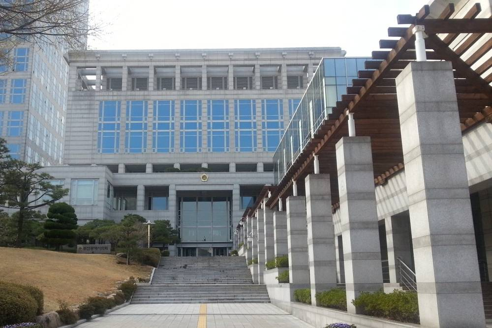

부산시의회 원탁회의, 사회적기업이 이끄는 지역에너지 공공개발 방안 논의

2024년 10월 23일 기획재경위·부산연구원 공동 주최…기조발제서 1GW 공급 경제효과 추산
부산시의회 기획재경위원회는 2024년 10월 23일 부산연구원과 함께 「부산 분산형 자급자족 에너지인프라 개발 및 확충 등을 위한 전략 원탁회의」를 열고, 사회적기업이 이끄는 지역에너지회사가 공공개발을 맡는 '제4섹터 방식'의 지원 방안을 논의했다. 기조발제에서는 이 방식의 지역에너지회사가 10년 안에 1GW(태양광·풍력 각 500MW)를 공급하면 사업 개시 후 20년간 생산유발 5조2,000억 원 등의 효과를 낼 수 있다는 추산과 함께, 부산지역에너지기본계획이 꼽은 공공시설·부지 51곳(293MW 이상)부터 시작하자는 제안이 나왔다. 종합토론에서 최윤찬 부산연구원 박사는 이 방식을 에너지공사 추진 무산 뒤 시행할 만한 의미 있는 정책의제라고 말했다. 성창용 위원장은 부산시가 이를 반영해 적극 행정을 펴도록 의정활동을 하겠다고 밝혔다.
시민에너지 관점
부산지역에너지기본계획이 공공시설·부지 51곳에서만 293MW 이상의 태양광이 가능하다고 본 만큼, 시작할 자리는 이미 있다. 시민 조직이 그만한 사업을 감당할 수 있느냐는 물음이 남지만, 시의회와 시 연구기관이 이 방식을 공식 의제로 다뤘다는 것은 제도 논의가 한 단계 나아갔다는 뜻으로 보인다. 다만 기조발제의 경제효과는 추진 측 추산이고 부산시 정책으로 채택된 것은 아니다. 논의가 조례와 예산으로 이어져 공공부지 한 곳에서라도 실제 사업이 시작되도록 해야 한다.
출처: 인저리타임 2024-10-24 조송현 원문 보기
釜山市议会圆桌会议讨论由社会企业主导的地方能源公共开发方案
2024年10月23日由企划财经委员会与釜山研究院共同主办，主旨发言估算1GW供电的经济效果
釜山市议会企划财经委员会于2024年10月23日与釜山研究院共同举行“釜山分布式自给自足能源基础设施开发与扩充战略圆桌会议”，讨论对由社会企业主导的地方能源公司承担公共开发的“第四部门方式”的支持方案。主旨发言估算，若采用该方式的地方能源公司在10年内供应1GW（太阳能和风电各500MW），项目启动后20年内可带来5.2万亿韩元生产诱发效果等，并提议从釜山地区能源基本计划列出的51处公共设施和用地（293MW以上）着手。在综合讨论中，釜山研究院博士 Choi Yun-chan 表示，这是能源公社推进落空后值得实施的有意义的政策议题。委员长 Seong Chang-yong 表示，将通过议政活动推动釜山市积极落实。
市民能源视角
釜山地区能源基本计划认为，仅51处公共设施和用地就可建设293MW以上的太阳能，可以起步的地方已经存在。市民组织能否承担如此规模的项目仍是疑问，但市议会和市属研究机构把这一方式作为正式议题讨论，似乎意味着制度讨论前进了一步。不过，主旨发言中的经济效果是推动方的估算，并未被采纳为釜山市政策。应让讨论落实到条例和预算，哪怕先在一处公共用地上真正启动项目。
来源: Injurytime 2024-10-24 Cho Song-hyun 查看原文
Busan council roundtable discusses social enterprise-led local energy public development
Co-hosted by the planning and finance committee and the Busan Development Institute on October 23, 2024; keynote estimates the economic effect of 1GW
The Busan Metropolitan Council's planning and finance committee and the Busan Development Institute held a strategy roundtable on developing distributed, self-sufficient energy infrastructure on October 23, 2024, discussing support for the "Fourth Sector" approach, in which local energy companies led by social enterprises carry out public development. The keynote estimated that if such companies supplied 1GW within 10 years (500MW each of solar and wind), it could generate 5.2 trillion won in production effects over 20 years from launch, and proposed starting with 51 public facilities and sites (293MW or more) identified in Busan's regional energy plan. In the discussion, Busan Development Institute researcher Choi Yun-chan called the approach a meaningful policy agenda after the energy corporation plan fell through. Committee chair Seong Chang-yong said he would work in the council to get the city to act on it.
Citizen Energy View
Busan's regional energy plan found room for 293MW or more of solar on just 51 public facilities and sites, so places to start already exist. Questions remain over whether citizen organizations can handle projects of that size, but the council and the city's research institute taking the approach up as a formal agenda appears to mark a step forward in policy debate. The keynote's economic figures, however, are the proponents' estimates and have not been adopted as city policy. The discussion should be carried into ordinances and budgets so that a real project starts on at least one public site.
Source: Injurytime 2024-10-24 Cho Song-hyun Read the original